4. Créer une IA¶
4.1. Objectif¶
Découvrir l’apprentissage automatique en entraînant un système de reconnaissance d’images avec l’outil en ligne ‘Teachable Machine’ de Google.
Âge |
10 à 18 ans |
Notions abordées |
Intelligence artificielle, apprentissage automatique, classification d’images, modèle de prédictions. |
Durée |
2 heures |
Dispositif pédagogiques |
Par groupe de 2 |
Matériel |
Un laptop/tablette par groupe de 2, avec connexion à Internet |
Prérequis |
Aucun |
4.2. Introduction¶
La reconnaissance d’images par un ordinateur est une forme d’intelligence artificelle basée sur l’apprentissage automatique: Des exemples d’images de différentes catégories sont montrés à l’ordinateur, et un algorithme d’apprentissage est utilisé pour permettre à l’ordinateur de reconnaître les différentes catégories.
Vocabulaire utile:
Les catégories d’images à reconnaître (sourire, grimace, objet, etc …) sont appelées classes
L’ensemble des exemples des différentes classes que l’on utilise pour l’apprentissage s’appelle le jeu de données d’apprentissage
L’apprentissage automatique est le terme employé lorsque l’on montre des exemples de ce que l’ordinateur doit apprendre à reconnaître
Le système de reconnaissance est plus couramment appelé modèle de prédiction.
Dans le cas de la classification d’images, un modèle de prédiction est donc entrainé à reconnaître différentes classes d’images à partir d’un jeu de données d’apprentissage.
L’outil que tu utiliseras ici pour entraîner le modèle d’apprentissage automatique est la Teachable Machine, qui permet d’entraîner facilement un modèle de reconnaissance d’images en prenant des photos depuis la webcam. Tu associeras les images à des classes que le modèle devra reconnaître. La création de ton modèle (l’entraînement) sera fait sur le cloud par un service de Google.
Nous te montrerons deux exemples: la reconnaissance de visages et la détection d’objet sur un sol martien. Une fois que tu auras compris comment se passe l’entraînement d’un modèle, tu pourras créer d’autres applications de reconnaissance, par exemple pour reconnaître des objects, des émotions sur un visage, etc…
Ce tutoriel te montrera aussi comment tester ton ‘modèle’ sur de nouvelles images, et exporter ton modèle pour pouvoir l’utiliser dans un programme Scratch ou Python.
4.3. Teachable machine¶
Va sur le site de la Teachable Machine à https://teachablemachine.withgoogle.com. Tu peux changer la langue dans la liste déroulante qui se trouve tout en bas de la page, à droite.
Clique sur “Commencer”.
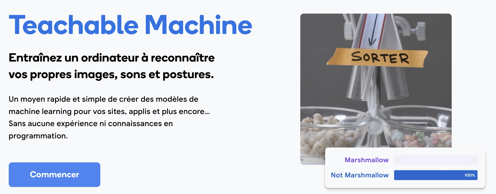{kind=link}
Dans la page “Nouveau projet”, clique sur “Projet image”.
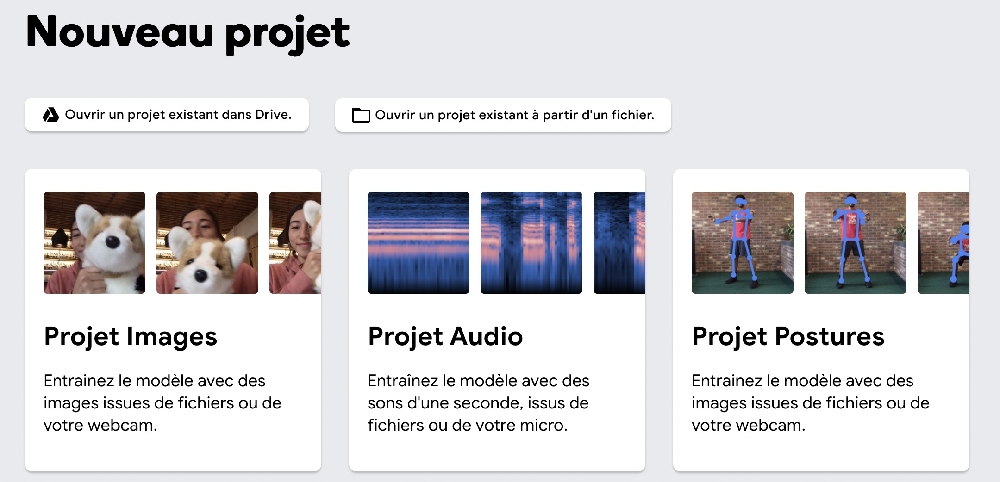{kind=link}
Puis clique sur “Modèle d’image standard”.
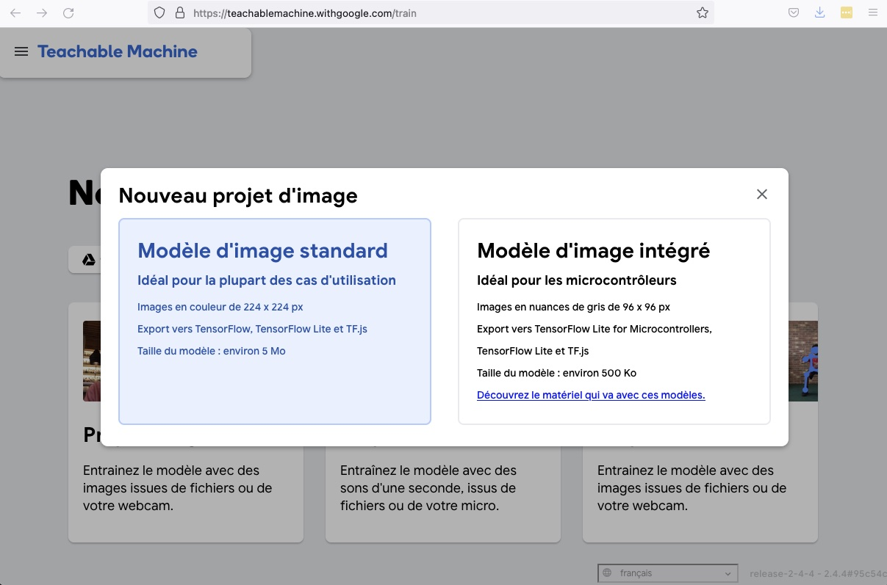{kind=link}
4.4. Interface pour entraîner le modèle¶
Après avoir cliqué “Modèle d’image standard”, l’interface permettant de faire un entraînement s’affiche:
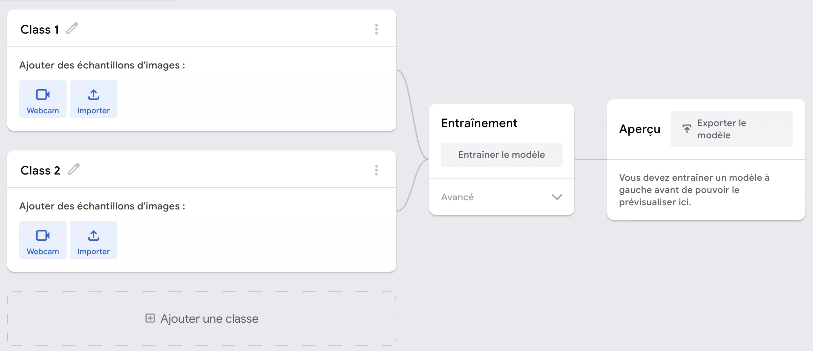{kind=link}
Elle est composée de trois parties:
A gauche, tu peux ajouter des images pour différentes classes. Par défaut, l’interface te propose d’ajouter des images pour deux classes différentes, qui s’appellent ‘Class 1’ et ‘Class 2’. Tu peux ajouter des classes en cliquant sur ‘Ajouter une classe’ en bas.
Au milieu, le bouton ‘Entraînement’ te permet d’entraîner le modèle.
A droite, dans ‘Aperçu’, tu pourras tester et exporter ton modèle une fois que tu l’auras entraîné.
4.5. Choix des classes¶
Le choix des classes dépend de ce que tu veux faire reconnaître à l’ordinateur. Nous allons ici te montrer deux exemples: Un classifieur qui reconnaît des visages, et un classifieur capable de retrouver des tubes sur un sol martien (ce classifieur pourra servir plus tard pour les activités liées à Mars et à la construction d’un rover).
Tu peux bien sûr entraîner ton classifieur à faire autre chose, comme reconnaître des objets, des fruits, ou des expressions de visages!
Pour l’entraînement, prends au moins quelques dizaines d’images. Renomme les classes comme tu le souhaite en cliquant sur l’icône de crayon associé à chaque classe, puis appuie sur l’icône de caméra pour prendre différentes images de la classe correspondante.
Lorsque tu cliqueras sur la caméra, il est possible que le navigateur Web te demande l’autorisation d’utiliser la caméra. Dans ce cas, autorise-le.
4.6. Exemple pour un classificateur de visages¶
Dans le cas d’un classifieur de visages, prends une vingtaine d’images pour chacun des visages à reconnaître. Ici, le mieux est de faire l’activité par deux, avec deux classes: Une classe pour ton visage, et l’autre classe pour le visage de celui avec qui tu fais l’activité. Pour les noms des classes, utilise simplement ton nom et celui de ton/ta camarade.
Veille ici à prendre des exemples aussi variés que possibles (position du visage par rapport à la caméra, conditions d’éclairage, fond de l’image) afin de rendre le système de reconnaissance le plus fiable possible. Une fois qu’une vingtaine d’images ont été prises pour chacun de vos deux visages, l’interface ressemblera à ceci:
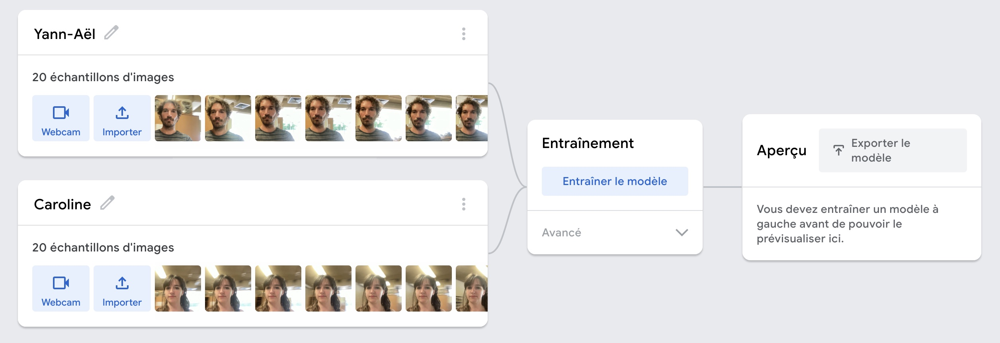{kind=link}
4.7. Entraînement et test du modèle¶
Clique ensuite sur “Entraînement”. Cela prend en général moins d’une minute pour que l’entraînement se termine. Une fois celui-ci terminé, la partie de droite ‘Aperçu’ t’affichera l’image provenant de la webcam, et te permettra de tester ton modèle.
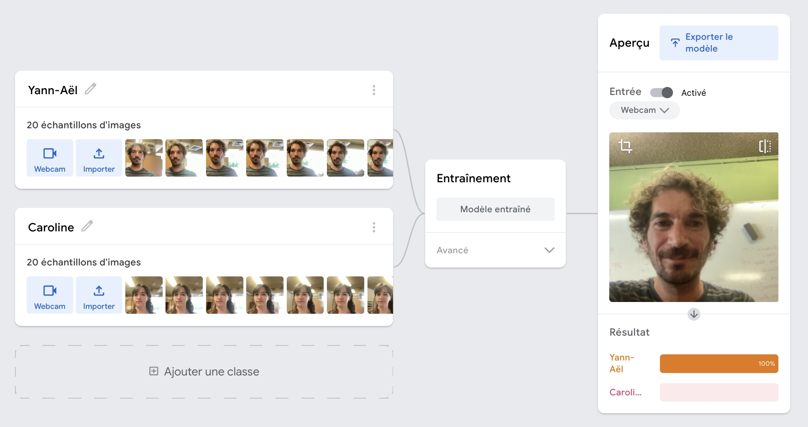{kind=link}
Questions à te poser :
Que se passe-t-il si aucun visage n’est présent, ou le visage de quelqu’un d’autre ?
Que se passe-t-il lorsque vos deux visages sont présents à la caméra ?
On peut voir que le système n’ayant appris que deux classes correspondant à deux visages, il essaiera toujours d’associer ce qu’il perçoit à l’un des deux visages, même si ceux-ci ne sont pas présents (ou qu’il sont présents tous les deux). Pour améliorer le système, d’autres classes peuvent être ajoutées (par exemple une classe ‘autre’, contenant des exemples avec aucun visage, ou des deux visages en même temps).
4.8. Exportation du modèle¶
Exporte ton modèle pour pouvoir l’utiliser ensuite avec Scracth (Adacraft) ou Python. Pour cela, clique sur ‘Exporter’. La fenêtre suivante apparaît:
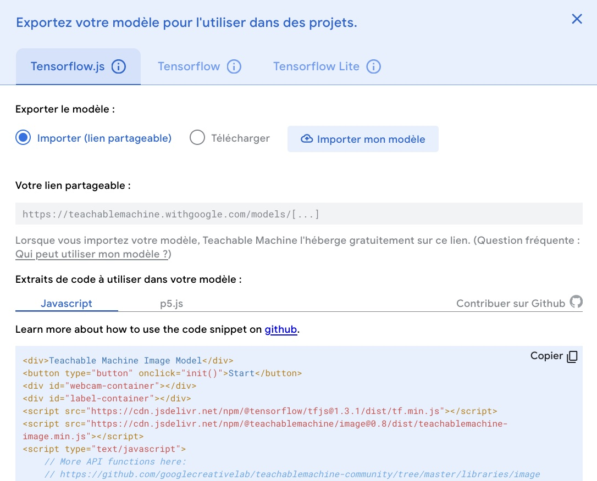{kind=link}
4.8.1. Export du modèle pour une utilisation avec Scratch (Adacraft)¶
Dans l’onglet ‘Tensorflow.js’, clique sur ‘Importer le modèle’. Cela prend environ deux minutes. Un lien vers le modèle apparaîtra comme ci-dessous:
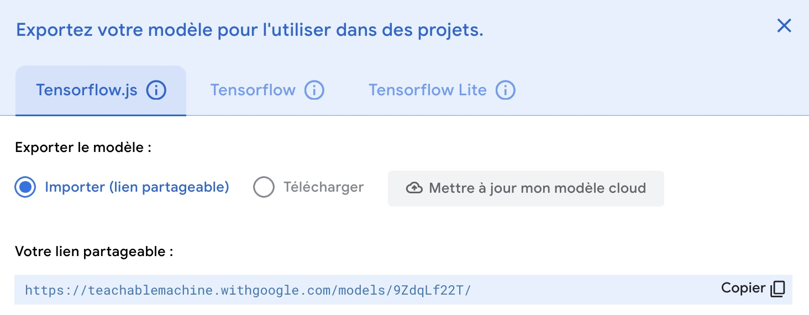{kind=link}
Copie-le pour pouvoir le réutiliser plus tard dans le bloc Modèle d’Adacraft (tu peux aussi cliquer sur ‘Copier’ en bas à droite de la fenêtre pour copier le lien, que tu pourras ensuite coller dans Adacraft).
4.8.2. Export du modèle pour une utilisation avec Python¶
Pour l’utilisation du modèle avec Python, il faut utiliser la version Tensorflow Lite du modèle. Pour cela, va dans l’onglet ‘Tensorflow Lite’, et sélectionne ‘Quantifiés’.
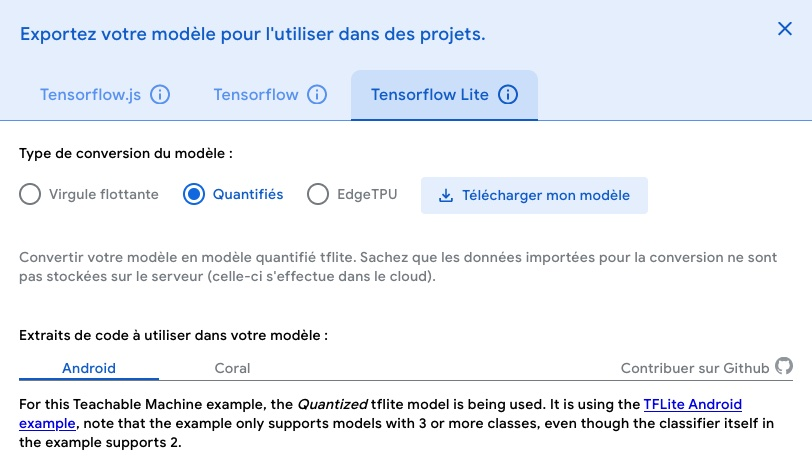{kind=link}
Clique ensuite sur ‘Télécharger mon modèle’. Tu devras attendre environ 30 secondes pour que le modèle soit converti. Une fenêtre apparaîtra ensuite pour te permettre de télécharger un fichier s’appelant ‘converted_tflite.zip’, qui fait environ 2 mégaoctets. Télécharge le ficher en ouvrant l’archive ‘zip’. L’archive contient deux fichiers:
Un ficher texte ‘labels.txt’
Un ficher ‘model.tflite’ qui pourra être ouvert par Python pour utiliser le modèle.
Note: Si tu as un Coral, dans l’onglet ‘Tensorflow Lite’, sélectionne ‘EdgeTPU’, puis ‘Télécharger mon modèle’.
4.9. Reconnaissance de tubes sur un sol martien¶
Le second exemple que nous te donnons a pour but de faire un classifieur capable de dire si un tube est présent sur un sol martien. On distingue donc deux classes: Soit l’image perçue par la caméra contient un échantillon (un tube contenant des poussières de sol martien), soit elle n’en contient pas. Nous appellerons la première classe “Tube”, et la seconde classe “Autre”.
Pour faire l’entraînement, imprime au préalable l’image ci-dessous. On y voit un tube posé sur un sol martien (le tube est à peu près au centre).
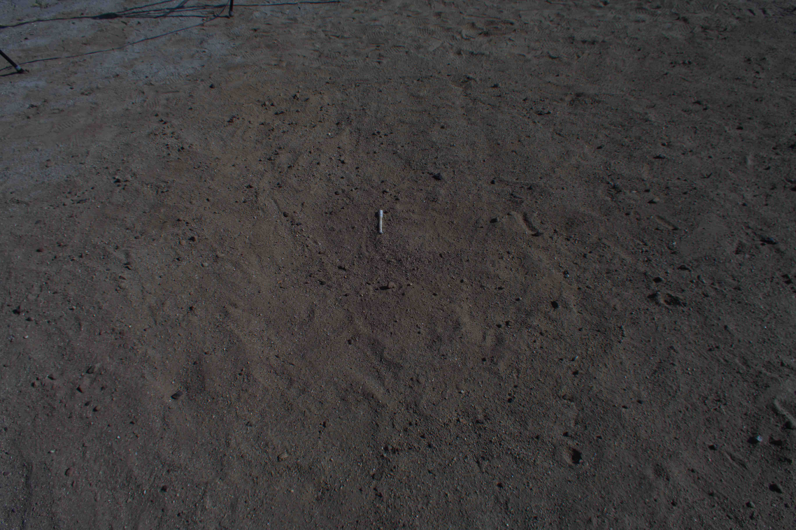{kind=link}
Note : Plutôt que l’image de sol martien avec le tube, tu peux utiliser directement un objet que tu as à portée de main, tel qu’un crayon, une boîte, ou autre.
Les étapes sont ensuite les même que précédemment, pour entraîner, tester et exporter le modèle.
Pour l’entraînement, définis deux classes: ‘Tube’ et ‘Autre’. Pour la classe’ Autre’, ajoute des photos avec la webcam de parties de l’image où seul le sol est présent pour la classe sol, ou des photos de toi devant la caméra. Pour la classe ‘Tube’, prends des photos de l’image imprimée sur lesquelles le tube est visible. Une fois les photos prises pour les deux classes, tu devrais obtenir un jeu de données tel que celui illustré ci-dessous:
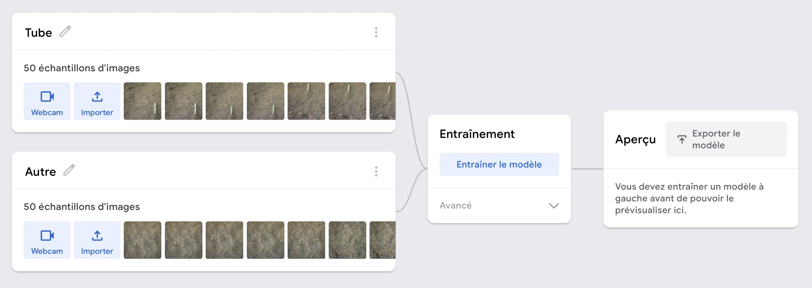{kind=link}
Lance ensuite l’entraînement en cliquant sur le bouton ‘Entraînement’. Une fois celui-ci terminé (environ une minute), tu peux tester ton modèle en déplaçant la feuille devant la webcam. Vérifie que le modèle reconnaît correctement la présence du tube:

Tu peux exporter ton modèle pour une utilisation vers Adacraft (Scratch) ou Python de la même manière que celle décrite ci-dessus pour la reconnaissance de visages.